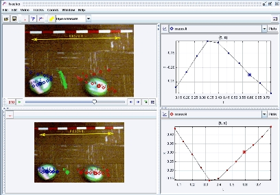

In this laboratory exercise, students capture videos of 2D collisions between air pucks and then analyze them in two different reference frames: (i) the laboratory frame, in which the camera is at rest and (ii) the center of mass (cm) frame, in which the total momentum of the system is zero. Advantages of transforming to the cm reference frame are (a) visually and graphically, the motions of the particles have a high degree of symmetry, particularly in two-body collisions, and (b) analytically, all translational kinetic energy is "internal" and available for transformation to other forms. Tracker makes it easy to switch reference frames to not only analyze but also "see" the collision from the cm frame.
